전자기사 (2009-03-01 기출문제)
1과목: 전기자기학
1. 다음 중 국제 단위계(SI)에 있어서 인덕턴스(Indectance)의 차원(次元)으로 옳은 것은? (단. L은 길이, M은 질량, T는 시간, I는 전류이다.)
- LMT-2I-2
- L2MT-2I-2
- L2MT-3I-2
- L-2M-1T4I2
(정답률: 알수없음)

2. 저항 10[Ω]의 코일을 지나는 자속이 ø = 5sin10t[A]일 때, 유도기전력에 의한 전류[A]의 최대값은?
- 1[A]
- 2[A]
- 5[A]
- 10[A]
(정답률: 알수없음)
3. 그림과 같이 면적 S[m2]인 평행판 콘덴서의 극판간에 판과 평행으로 두께 d1[m], d2[m], 유전율 ε1[F/m], ε2[F/m]의 유전체를 삽입하면 정전용량[F]은?
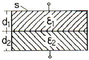
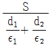
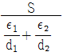
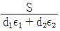
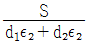
(정답률: 알수없음)
4. 자기 쌍극자의 자위에 관한 설명 중 맞는 것은?
- 쌍극자의 자기모멘트에 반비례한다.
- 거리제곱에 반비례한다.
- 자기 쌍극자의 축과 이루는 각도 θ의 sinθ에 비례한다.
- 자위의 단위는 [Wb/J]이다.
(정답률: 알수없음)
5. 다음 사항 중 옳은 것은?
- ∇×H는 면전류밀도 [A/m2]를 의미하며, curl H 또는 rot H 와 같다.
- ∇V는 전계방향과 반대이고, 등전위면과 직각방향인 전위가 감소하는 방향으로 향한다.
- ∇ㆍD는 단위면적당의 발산전속수를 의미한다.
- ∇×(∇×A)는 벡터 항등식에서 ∇(∇ㆍA)∇2A와 같다.
(정답률: 알수없음)
6. 이종(異種)의 유전체사이의 경계면에 전하분포가 없을 때 경계면 양쪽에 대한 설명으로 옳은 것은?
- 전계의 법선성분 및 전속밀도의 접선성분은 서로 같다.
- 전계의 법선성분 및 전속밀도의 법선성분은 서로 같다.
- 전계의 접선성분 및 전속밀도의 접선성분은 서로 같다.
- 전계의 접선성분 및 전속밀도의 법선성분은 서로 같다.
(정답률: 알수없음)
7. 그림과 같은 반지름 ρ[m]인 원형 영역에 걸쳐 균등 자속 밀도가 B = Boaz[T]로 측정되었다면 그 원형 영역내의 벡터포텐셜 A[Wb/m]는 얼마인가?
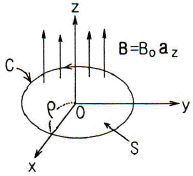
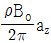
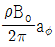
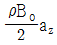
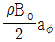
(정답률: 알수없음)
8. 압전기 현상에서 분극이 응력과 같은 방향으로 발생하는 현상을 무슨 효과라 하는가?
- 종효과
- 횡효과
- 역효과
- 간접효과
(정답률: 알수없음)
9. 반사계수 ϓ = 0.8일 때 정재파비 S를 데시벨[dB]로 표시하면?
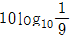
- 10 log109
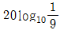
- 20 log109
(정답률: 알수없음)
10. 평등 전계 내에 수직으로 비유전율 εr = 3인 유전체 판을 놓았을 경우 판 내의 전속밀도 D = 4×10-6[C/m2]이었다. 이 유전체의 비분극률은?
- 2
- 3
- 1×10-6
- 2×10-6
(정답률: 알수없음)
11. 대전된 도체구 A를 반지름이 2배가 되는 대전되어 있지 않는 도체구 B에 접속하면 도체구 A는 처음 갖고 있던 전계 에너지의 얼마가 손실되겠는가?
- 3/2
- 2/3
- 5/2
- 2/5
(정답률: 알수없음)
12. 도전률 σ, 투자율 μ인 도체에 교류전류가 흐를 때 표피효과에 의한 침투깊이 δ는 σ와 μ, 그리고 주파수 f에 어떤 관계가 있는가?
- 주파수 f와 무관하다.
- σ가 클수록 작다.
- σ와 μ에 비례한다.
- μ가. 클수록 크다.
(정답률: 알수없음)
13. 비유전율 εr = 4, 비투자율 μr = 1인 매질 내에서 주파수가 1[GHz]인 전자기파의 파장은 몇 [m] 인가?
- 0.1[m]
- 0.15[m]
- 0.25[m]
- 0.4[m]
(정답률: 알수없음)
14. 서로 결합하고 있는 두 코일 C1과 C2의 자기인덕턴스가 각각 LC1, LC2라고 한다. 이 둘을 직렬로 연결하여 합성 인덕턴스값을 얻은 후 두 코일간 상호인덕턴스의 크기(|M|)를 얻고자 한다. 직렬로 연결할 때, 두 코일간 자속이 서로 가해져서 보강되는 방향이 있고, 서로 상쇄되는 방향이 있다. 전자의 경우 얻은 합성인덕턴스의 값이 L1, 후자의 경우 얻은 합성인덕턴스의 값이 L2 일 때, 다음 중 알맞은 식은?
- L1＜L2, |M|= L2+L1/4
- L1＞L2, |M|= L1+L2/4
- L1＜L2, |M|= L2-L1/4
- L1＞L2, |M|= L1-L2/4
(정답률: 알수없음)
15. 비투자율이 2500인 철심의 자속밀도가 5[Wb/m2]이고 철심의 부피가 4×10-6[m3]일 때, 이 철심에 저장된 자기에너지는 몇 [J] 인가?
- 1/π×10-2[J]
- 3/π×10-2[J]
- 4/π×10-2[J]
- 5/π×10-2[J]
(정답률: 알수없음)
16. 반지름이 1[cm]와 2[cm]인 동심원통의 길이가 50[cm]일 때 이것의 정전용량은 약 몇 [pF] 인가? (단, 내원통에 +λ[cm], 외원통에 -λ[cm]인 전하를 준다고 한다.)
- 0.56[pF]
- 34[pF]
- 40[pF]
- 141[pF]
(정답률: 알수없음)
17. E[V/m]의 평등 전계를 가진 절연유(비유전율 εr) 중에 있는 구형기포(球形氣泡) 내의 전계의 세기는 몇 [V/m]인가?
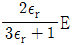
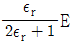
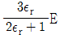
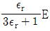
(정답률: 알수없음)
18. 다음 중 20℃에서 저항온도계수(temperature coefficient of resistance)가 가장 큰 것은?
- Ag
- Cu
- Al
- Ni
(정답률: 알수없음)
19. 커패시터를 제조하는데 A, B, C, D와 같은 4가지의 유전재료가 있다. 커패시터내에서 단위체적당 가장 큰 에너지 밀도를 나타내는 재료부터 순서대로 나열하면? (단, 유전재료 A, B, C, D의 비유전율은 각각 εrA = 8, εrB = 10, εrC = 2, εrD = 4 이다.)
- B ＞ A ＞ D ＞ C
- A ＞ B ＞ D ＞ C
- D ＞ A ＞ C ＞ B
- C ＞ D ＞ A ＞ B
(정답률: 알수없음)
20. 다음 중 자기회로에서 키르히호프의 법칙으로 알맞은 것은? (단, R : 자기저항, ø : 자속, N : 코일 권수, I : 전류 이다.)
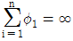
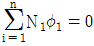
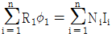
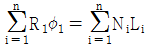
(정답률: 알수없음)
2과목: 회로이론
21. 시정수 τ를 갖는 R-L 직렬회로에 직류 전압을 인가할때 t = 3τ가 되는 시간에 회로에 흐르는 전류는 최종값의 몇 [%]가 되는가?
- 86[%]
- 73[%]
- 95[%]
- 100[%]
(정답률: 알수없음)
22. 다음 4단자 회로망에서의 Y-Parameter Y11, Y21은?
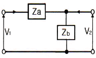
- Y11 = 1/Za, Y21 = 1/Zb
- Y11 = 1/Zb, Y21 = 1/Za
- Y11 = 1/Za, Y21 = 1/Za
- Y11 = 1/Zb, Y21 = 1/Zb
(정답률: 알수없음)
23. 정현파 전압의 진폭이 Vm이라면 이를 반파 정류했을 때의 평균값은?
- Vm/2
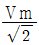
- Vm/π
- 2Vm/π
(정답률: 알수없음)
24. 감쇠기의 전력비가 P1/P2 = 100일 때의 감쇠량[dB]은?
- 1
- 10
- 20
- 100
(정답률: 알수없음)
25. 교류 브리지가 평형 상태에 있을 때 L의 값은?
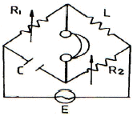
- L = R2/(R1C)
- L = CR1CR2
- L = C/(R1R2)
- L = (R1R2)/C
(정답률: 알수없음)
26. e-at cos ωt의 라플라스(Laplace) 변환은?
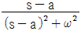
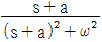
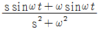
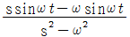
(정답률: 알수없음)
27. 다음 설명은 어떤 회로망 정리를 표현한 것인가?
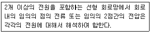
- 노튼 정리
- 보상 정리
- 테브난 정리
- 중첩의 정리
(정답률: 알수없음)
28. 전압비 20을 데시벨로 표시하면 몇 [dB] 인가? (단, log102 = 0.3)
- 13
- 20
- 26
- 100
(정답률: 알수없음)
29. 다음을 역 Laplace로 변환하면?
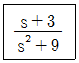
- cos 3t
- sin 3t
- sin 9t + cos 9t
- sin 3t + cos 3t
(정답률: 알수없음)
30. R-L-C 직렬공진회로에서 공진 주파수가 fr 이고, 반전력 대역폭이 Δf 일 때 공진도 Qr은?
- Qr = Δf/fr
- Qr = Δf/2πfr
- Qr = fr/Δf
- Qr = 2πfr/Δf
(정답률: 알수없음)
31. 인덕턴스 L1, L2가 각각 2[mH], 4[mH]인 두 코일간의 상호 인덕턴스 M이 4[mH]라고 하면 결합계수 K는 약 얼마인가?
- 1.41
- 1.54
- 1.66
- 2.47
(정답률: 알수없음)
32. 다음 그림의 정현파에서 v(t) = Vsin(ωt+ø)의 주기 T를 올바르게 표시한 것은?
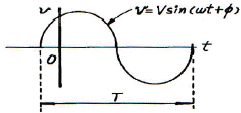
- 2πω
- 2πf
- ω/2π
- 2π/ω
(정답률: 알수없음)
33. R, L, C 병렬 공진회로에 관한 설명 중 옳은 것은?
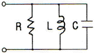
- R 이 작을수록 Q가 낮다.
- 공진시 입력 어드미턴스는 매우 작아진다.
- 공진 주파수 이하에서의 입력 전류는 전압보다 위상이 뒤진다.
- 공진시 L 또는 C로 흐르는 전류는 입력 전류 크기의 1/Q배가 된다.
(정답률: 알수없음)
34. LC 공진회로에서 R = 3[Ω], L = 15[mH]일 때 2kHz의 정현파를 인가하였더니 공진이 발생했다. 이 때 캐패시턴스 C는 약 얼마인가?
- 422[nF]
- 422[μF]
- 53⑤[μF]
- 47[μF]
(정답률: 알수없음)
35. 그림과 같은 T형 4단자 회로의 임피던스 파라미터 Z21은?
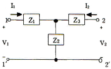
- Z1+Z2
- -Z2
- Z2
- Z2+Z3
(정답률: 알수없음)
36. R-L-C 직렬 회로에 t = 0인 순간, 직류 전압을 인가한다면 2계 선형 미분방정식은?
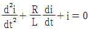
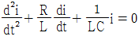
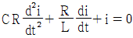
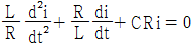
(정답률: 알수없음)
37. 임피던스 Z(s)가
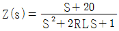
인 2단자 회로에 직류 전원 20[A]를 인가할 때 이 회로의 단자 전압은?- 20[V]
- 40[V]
- 200[V]
- 400[V]
(정답률: 알수없음)
38. 정 K형 저역통과 필터의 공칭 임피던스는?
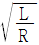
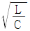
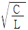
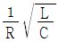
(정답률: 알수없음)
39. “회로망 중의 임의의 폐회로에 있어서 그 각지로(枝路)의 전압 강하의 총합은 그 폐회로 중의 기전력의 총합과 같다.” 이와 관계되는 법칙은?
- 플레밍의 법칙
- 렌쯔의 법칙
- 패러데이의 법칙
- 키르히호프의 법칙
(정답률: 알수없음)
40. 자계 코일에 권수 N = 2000회, 저항 R = 6[Ω]에서 전류 I = 10[A]가 통과하였을 경우 자속 ø = 6×10-2[Wb]이다. 이 회로의 시정수는 몇 sec 인가?
- 1
- 2
- 10
- 12
(정답률: 알수없음)
3과목: 전자회로
41. 수정발진자의 직렬 공진주파수를 fS, 병렬 공진주파수를 fP라고 할 때, 안정된 발진을 지속할 수 있는 발진주파수 fO의 범위는?
- fO ＜ fS
- fO ＞ fP
- fP ＜ fO ＜ fS
- fS ＜ fO ＜ fP
(정답률: 알수없음)
42. 저주파 증폭기에서 입력이 100[mV]일 때 전압이득이 60[dB]이고, 제2 및 제3 고조파 전압이 각각 1.73[V], 1[V]이다. 출력전압의 왜율은 약 몇 [%] 인가?
- 1[%]
- 2[%]
- 5[%]
- 7[%]
(정답률: 알수없음)
43. 다음 중 이상적인 연산증폭기의 특징에 대한 설명으로 적합하지 않은 것은?
- 입력 오프셋 전압은 0 이다.
- 오픈 루프 전압이득이 무한대이다.
- 동상 신호 제거비(CMRR)가 0 이다.
- 두 입력전압이 같을 때 출력전압은 0 이다.
(정답률: 알수없음)
44. 다음 중 병렬 전류 궤환 증폭기의 궤환 신호 성분은?
- 전압
- 전류
- 전력
- 임피던스
(정답률: 알수없음)
45. 다음과 같이 1[MHz]의 수정발진기 출력을 펄스 정형회로(Pulse shaper)를 거쳐 구형파로 바꾼 후 250[Hz]의 클럭 주파수를 만들고자 한다. 블록 A에 카운터를 설계하여 분주하는 경우 최소 몇 개의 플립플롭이 필요한가?
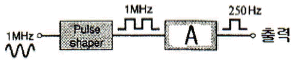
- 10개
- 11개
- 12개
- 13개
(정답률: 알수없음)
46. 다음의 연산증폭기 회로에서 출력전압 Vo는? (단, Ra/Rb = R1/R2 이다.)
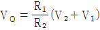
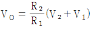
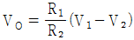
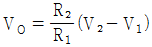
(정답률: 알수없음)
47. 다음 회로의 명칭으로 가장 적합한 것은?
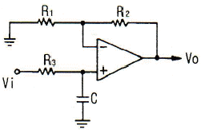
- 저역통과 여파기
- 고역통과 여파기
- DC-AC 변환기
- 시미트 트리거
(정답률: 알수없음)
48. 부호기라고도 하며 복수 개의 입력을 대응 2진 코드로 변환하는 조합논리회로를 무엇이라 하는가?
- 디코더
- 인코더
- 플립플롭
- 멀티플렉서
(정답률: 알수없음)
49. 다음과 같은 회로 입력에 정현파를 인가하였을 때 출력 파형으로 가장 적합한 것은? (단, ZD는 이상적인 제너다이오드 이다.)
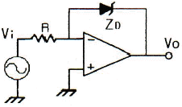
- 구형파형
- 정현파형
- 삼각파형
- 톱날파형
(정답률: 알수없음)
50. 다음 중 적분 회로로 사용 가능한 회로는?
- 저역통과 RC 회로
- 고역통과 RC 회로
- 대역소거 RC 회로
- 대역통과 RC 회로
(정답률: 알수없음)
51. 다음 회로의 명칭으로 가장 적합한 것은?
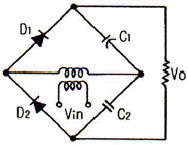
- 평형 변조회로
- 전파 정류회로
- 배전압 정류회로
- 반파 정류회로
(정답률: 알수없음)
52. 다음 중 입력 저항이 가장 크게 될 수 있는 회로는?
- bootstrapping 회로
- cascade 증폭기 회로
- 트랜지스터 chopper 회로
- 베이스 접지형 증폭기 회로
(정답률: 알수없음)
53. 다음 중 발진주파수 변동 원인과 방지책이 적합하지 않은 것은?
- 주위온도 변화 : 항온조를 사용한다.
- 부하 변동 : 발진기 후단에 완충증폭기를 사용한다.
- 회로소자 변화 : 방습제를 사용한다.
- 전원전압 변동 : 전력증폭기 등 다른 회로 전원과 공동으로 사용한다.
(정답률: 알수없음)
54. JFET에서 IDSS = 9[mA]이고, VGS(OFF) = -8[V]이다. VGS = 14[V]일 때 드레인 전류는 약 몇 [mA] 인가?
- 1.2[mA]
- 2.25[mA]
- 3.4[mA]
- 4.12[mA]
(정답률: 알수없음)
55. 어떤 차동증폭기의 동상신호제거비(CMRR)가 86[dB]이고, 차 신호에 대한 전압이득(Ad)이 100000 이라고할 때 이 차동증폭기의 동상신호에 대한 이득(Ac)은 얼마인가?
- 5
- 10
- 50
- 100
(정답률: 알수없음)
56. 고역 3[dB] 차단주파수가 100[kHz]이고, 전압이득이 46[dB]인 증폭기에 부궤환을 걸어서 전압이득을 20[dB]로 낮추면 고역 3[dB] 차단주파수는 몇 [kHz]인가?
- 500[kHz]
- 1000[kHz]
- 2000[kHz]
- 4000[kHz]
(정답률: 알수없음)
57. 다음 회로에서 Re의 주 역할로 가장 적합한 것은? (단, C의 값은 매우 크다.)
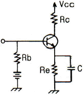
- 출력 증대
- 동작점의 안정화
- 바이어스 전압감소
- 주파수 대역폭 증대
(정답률: 알수없음)
58. 이미터 접지 증폭기에서 ICO가 100[μF]이고, IB가 1[mA]일 때 컬렉터 전류는 약 몇 [mA] 인가? (단, 트랜지스터의 α는 0.99 이다.)
- 109[mA]
- 120[mA]
- 137[mA]
- 154[mA]
(정답률: 알수없음)
59. 다음 중 시미트 트리거(schmitt trigger) 회로에 대한 설명으로 가장 적합한 것은?
- 입력 파형에 관계없이 출력은 삼각파이다.
- 입력 전류의 크기로 회로의 on, off를 결정해 준다.
- A/D 변환기는 시미트 트리거 회로의 응용회로 중의 하나이다.
- 2개의 증폭기의 접지 단자를 공통으로 접속하고, 음귀환을 걸어 입력 신호의 진폭에 따라 2가지 안정된 상태를 이룬다.
(정답률: 알수없음)
60. 무궤환시 전압이득이 100±20 인 증폭기에 부궤환을 걸어서 전압이득을 ±1[%] 이내로 안정시키려면 궤환율 (β)은 얼마로 하면 되겠는가?
- 0.09
- 0.12
- 0.19
- 0.25
(정답률: 알수없음)
4과목: 물리전자공학
61. 균등 전계내 전자의 운동에 관한 설명 중 옳지 않은 것은?
- 전자는 전계와 반대 방향의 일정한 힘을 받는다.
- 전자의 운동 속도는 인가된 전위차 V의 제곱근에 반비례한다.
- 전계 E에 의한 전자의 운동에너지는 [J]이다.
- 전위차 V에 의한 가속전자의 운동에너지는 eV[J]이다.
(정답률: 알수없음)
62. 다음 중 전자의 비전하를 의미하는 것으로 옳은 것은?
- 전자와 전하의 비(ratio)를 의미
- 전자와 전류의 비(ratio)를 의미
- 전자와 질량의 비(ratio)를 의미
- 전류와 질량의 비(ratio)를 의미
(정답률: 알수없음)
63. 정공의 확산계수 DP = 55[cm2/sec]이고, 정공의 평균수명 τP = 10-6[sec]일 때의 확산 길이는 약 얼마인가?
- 6.3×103[cm]
- 6.3×10-3[cm]
- 7.4×103[cm]
- 7.4×10-3[cm]
(정답률: 알수없음)
64. 다음 중 열음극을 갖는 것은?
- 계전기 방전관
- 네온관
- 정전압 방전관
- 수은 정류관
(정답률: 알수없음)
65. 반도체에서 용량의 변화에 의해 동작되는 소자로 가변용량 다이오드라고도 하는 것은?
- 쇼트키(schottky) 다이오드
- 바렉터(varactor) 다이오드
- 터널(tunnel) 다이오드
- 제너(zever) 다이오드
(정답률: 알수없음)
66. 열평형 상태에서 PN접합 전류가 zero(dud)라는 의미는?
- 전위 장벽이 없어졌다는 것이다.
- 접합을 흐르는 다수 캐리어가 없다.
- 접합을 흐르는 소수 캐리어가 없다.
- 접합을 흐르는 소수 캐리어와 다수 캐리어가 같다.
(정답률: 알수없음)
67. n채널 전계 효과 트랜지스터(Field Effect Transister)에 흐르는 전류는 주로 어느 현상에 의한 것인가?
- 전자의 확산 현상
- 정공의 확산 현상
- 정공의 드리프트 현상
- 전자의 드리프트 현상
(정답률: 알수없음)
68. 광전자 방출에 대한 설명으로 옳지 않은 것은?
- 광전자 방출은 금속의 일함수와 관계가 있다.
- 금속 표면에 빛이 입사되면 전자가 방출되는 현상을 광전자 방출이라 한다.
- 한계 파장보다 긴 파장의 빛을 다량으로 입사시키면 광전자 방출이 일어난다.
- 광전자 방출을 위해서는 금속 표면에 입사되는 빛의 파장이 한계 파장보다 짧아야 한다.
(정답률: 알수없음)
69. 다음 중 접합형 트랜지스터가 개폐기로 쓰이는 영역은?
- 포화영역과 활성영역
- 활성영역과 차단영역
- 포화영역과 차단영역
- 활성영역과 역할성영역
(정답률: 알수없음)
70. 루비 레이저(ruby Laser)의 펌핑(pumping) 에너지는?
- 직류 전원이다.
- 광적 에너지이다.
- 자계 에너지이다.
- 주파수가 낮은 교류 전원이다.
(정답률: 알수없음)
71. Si 접합형 npn 트랜지스터의 베이스폭이 10-5[m]일때, α차단 주파수는 약 몇 [MHz] 인가? (단, Si의 전자이동도 μn은 0.15[m2/Vㆍs]이다.)
- 4
- 12
- 15
- 31
(정답률: 알수없음)
72. 다음 중 Fermi-Dirac 분포 함수는?
(정답률: 알수없음)
73. 2×104[m/sec]의 속도로 운동하는 전자의 드브로이(deBroglie) 파장은? (단, 프랑크 상수는 6.626×10-34[Jㆍsec], 전자의 질량은 9.1×10-31[kg])
- 1.82×10-26[m]
- 3.64×10-8[m]
- 1.64×1034[m]
- 1.21×10-16[m]
(정답률: 알수없음)
74. 일 함수(work function)의 설명 중 옳지 않은 것은?
- 금속의 종류에 따라 값이 다르다.
- 일 함수가 큰 것이 전자 방출이 쉽게 일어난다.
- 표면장벽 에너지와 Fermi 준위와의 차를 일 함수라 한다.
- 전자가 방출되기 위해서 최소한 이 일 함수에 해당되는 에너지를 공급받아야 한다.
(정답률: 알수없음)
75. 전계의 세기 E = 105[V/m]의 평등 전계 중에 놓인 전자에 가해지는 전자의 가속도는 약 얼마인가?
- 1.602×10-14[m/s2]
- 1.75×1016[m/s2]
- 5.93×105[m/s2]
- 1600[m/s2]
(정답률: 알수없음)
76. PN 접합 다이오드의 용량(Capacitance)에는 확산용량(Diffusion Capacitance) Cd와 접합용량(Junction Capacitance) Ct가 있다. 다음 중 옳은 것은?
- 바이어스 전압에 관계없이 Cd = Ct 이다.
- 순방향 바이어스 때는 Cd ≫ Ct 이다.
- 역방향 바이어스 때는 Cd ≫ Ct 이다.
- 순방향 바이어스 때는 Ct ≫ Cd 이다.
(정답률: 알수없음)
77. 반도체 재료의 제조시 고유저항 측정을 가끔하는 이유는?
- 캐리어의 이동도를 결정하기 때문
- 다결정 재료의 수명 시간을 결정하기 때문
- 진성 반도체의 캐리어 농도를 결정하기 때문
- 불순물 반도체의 캐리어 농도를 결정하기 때문
(정답률: 알수없음)
78. 터널 다이오드(Tunnel Diode)에서 터넬링(Tunnelling)은 언제 발생하는가?
- 역방향에서만 발생
- 정전압이 높을 때만 발생
- 바이어스가 영(zero)일 때 발생
- 아주 낮은 전압에 있는 정방향에서 발생
(정답률: 알수없음)
79. 트랜지스터의 고주파 특성으로서 차단주파수 α는 무엇으로 결정되는가?
- 컬렉터에 걸어주는 전압
- 베이스 폭에 비례하고, 컬렉터 용량에 반비례한다.
- 베이스 폭의 자승에 반비례하고, 확산계수에 비례한다.
- 이미터에 걸어주는 전압에 비례하고, 컬렉터 용량에 반비례한다.
(정답률: 알수없음)
80. T=0[°K]에서 전자가 가질 수 있는 최대에너지 준위는?
- 페르미 에너지 준위
- 도너 준위
- 억셉터 준위
- 드리프트 준위
(정답률: 알수없음)
5과목: 전자계산기일반
81. CPU가 직접 입ㆍ출력을 제어하는 방식 중 Interrupt를 이용해서 I/O를 하는 이유로써 가장 타당한 것은?
- I/O 프로그램을 하기 쉽도록 하기 위해서
- CPU가 입ㆍ출력 개시를 지시한 후 더 이상 간섭하지 않아도 되기 때문에
- 프린터나 입력기의 구조에 인터럽트를 처리하는 장치가 내장되어 있기 때문에
- I/O의 speed를 증가시키기 위하여
(정답률: 알수없음)
82. 다음 중 플립플롭에 관한 설명으로 옳지 않은 것은?
- JK 플립플롭에서 J와 K에 모두 1 이 가해지면 출력은 반전된다.
- T 플립플롭은 트리거 입력이 가해질 때마다 출력 상태가 변화된다.
- D 랫치는 두 개의 입력 단자를 가지고 있어 동시에 S와 R에 1 입력신호가 나타난다.
- RS 플립플롭의 경우 R과 S가 동시에 1 인 경우는 금지되어 있다.
(정답률: 알수없음)
83. 다음의 회로에서 입력 값이 D = 1, C = 1(positive edge trigger)일 경우 출력 Q의 값은?
- 0
- 1
- Toggle
- 불변
(정답률: 알수없음)
84. 가상 기억장치(Virtual Memory)에 관한 설명 중 옳지 않은 것은?
- 보조기억장치와 같이 기억용량이 큰 기억장치를 마치 주 기억장치처럼 사용하는 개념이다.
- 중앙처리장치에 의해 참조되는 보조기억장치의 가상 주소는 주기억장치의 주소로 변환되어야 한다.
- 메모리 매핑(Mapping)에는 페이지(Page)에 의한 매핑과 세그먼트(Segment)에 의한 매핑으로 구분된다.
- 실행될 프로그램의 크기가 주기억장치의 용량보다 작을 때 사용한다.
(정답률: 알수없음)
85. 하나 이상의 프로그램 또는 연속되어 있지 않은 저장 공간으로부터 데이터를 모은 다음, 데이터들을 메시지 버퍼에 집어넣고, 특정 수신기나 프로그래밍 인터페이스에 맞도록 그 데이터를 조직화하거나 미리 정해진 다른 형식으로 변환하는 과정을 일컫는 것은?
- streaming
- porting
- converting
- marshalling
(정답률: 알수없음)
86. 다음 중 매개 변수 전달 기법이 아닌 것은?
- Call by Reference
- Call by Return
- Call by Value
- Call by Name
(정답률: 알수없음)
87. 프로그램이 정상적으로 실행되다가 어떤 명령어에 의해 실행 목적을 바꾸는 명령을 무엇이라 하는가?
- 시프트(Shift)
- 피드백(Feed back)
- 브랜칭(Branching)
- 인터럽트(Interrupt)
(정답률: 알수없음)
88. 머신 사이클(maching cycle)에 관한 설명 중 옳지 않은 것은?
- 모든 명령의 첫 번째 머신 사이클은 동작코드를 인출하기 위한 사이클, 즉 패치 사이클이다.
- 메모리 사이클은 메모리 읽기(read) 사이클과 메모리쓰기(write) 사이클로 구분된다.
- 입ㆍ출력 사이클에서는 신호를 사용할 수 없다.
- CPU는 각 명령의 최종 머신 사이클의 최종 T 사이클에서 신호를 조사한다.
(정답률: 알수없음)
89. RISC(Reduced Instruction Set Computer)와 CISC(Complex Instruction Set Computer)에 대한 설명중 잘못된 것은?
- RISC는 실행 빈도가 적은 하드웨어를 제거하여 자원 이용률을 높이는 장점이 있다.
- RISC는 프로그램의 길이가 길어지므로 수행 속도가 느린 단점이 있다.
- CISC는 고급언어를 이용하여 알고리즘을 쉽게 표현할 수 있는 장점이 있다.
- CISC는 복잡한 명령어군을 제공하므로 컴퓨터 설계 및 구현시 많은 시간을 필요로 하는 단점이 있다.
(정답률: 알수없음)
90. 다음 소프트웨어의 분류를 나타내는 단어들 중 성격이 다른 하나는?
- 미들웨어
- 프리웨어
- 쉐어웨어
- 라이트웨어
(정답률: 알수없음)
91. 다음 1비트를 비교하는 진리표이다. ( )에 알맞은 값은?
- a : 0, b : 0, c : 0
- a : 1, b : 0, c : 0
- a : 1, b : 0, c : 1
- a : 0, b : 0, c : 1
(정답률: 알수없음)
92. 어떤 디스크의 탐색시간이 12[ms], 전송률이 100[Mbyte/s], 회전속도가 7200[rpm]일 때 제어기의 지연시간이 1[ms]이다. 섹터의 크기가 512[byte]인 경우 한 섹터를 읽는데 걸리는 평균 액세스 타임은 얼마인가?
- 약 8.3[ms]
- 약 12.0[ms]
- 약 16.6[ms]
- 약 17.2[ms]
(정답률: 알수없음)
93. 주소지정이 간단하고 이해하기는 쉽지만 주소부가 길어지고, 메모리의 이용 효율이 떨어지는 주소지정 방식은?
- Absolute Address
- Relative Address
- Page Address
- Base Address
(정답률: 알수없음)
94. C 프로그램에서 선행처리기에 대한 설명 중 잘못된것은?
- 컴파일하기 전에 처리해야 할 일들을 수행하는 것이다.
- 상수를 정의하는 데에도 사용한다.
- 프로그램에서 “#” 표시를 사용한다.
- 유틸리티 루틴을 포함한 표준 함수를 제공한다.
(정답률: 알수없음)
95. 다음 중 부동 소수점 표현 방식의 설명으로 잘못된 것은?
- 2의 보수 표현 방법을 많이 사용한다.
- 매우 큰 수와 작은 수를 표시하기에 편리하다.
- 부호, 지수부, 가수부 등으로 구성되어 있다.
- 연산이 복잡하고 시간이 많이 걸린다.
(정답률: 알수없음)
96. 다음 중 전체 시스템의 안정성을 고려하고 업무처리의 신뢰성을 높여주기 위해, 두 개의 CPU가 같은 업무를 동시에 처리하고 그 결과를 비교하여 상호 보완해 주는 시스템은?
- 온라인(on-line) 시스템
- 분산처리(distributed) 시스템
- 듀얼(dual) 시스템
- 시분할(time sharing) 시스템
(정답률: 알수없음)
97. 컴퓨터나 주변장치 사이에 데이터 전송을 수행할 때 I/O 준비나 완료 상태를 나타내는 신호가 필요한 비동기식 입ㆍ출력 시스템에 널리 쓰이는 방식은?
- Polling
- Interruput
- Paging
- Handshaking
(정답률: 알수없음)
98. 다음 중 최소항(minterm)에 대해 바르게 설명한 것은?
- 출력값이 0 인 부분
- 출력값이 그 자체인 부분
- 출력값이 1 인 부분
- 출력값이 OR 형태로 결합된 항
(정답률: 알수없음)
99. CPU가 프로그램을 수행하는 동안 결과를 캐시기억장치에 쓸 경우 주기억장치와 캐시기억장치의 데이터가 서로 일치하지 않는 경우가 발생할 수 있는 방식은?
- 나중 쓰기(write-back) 방식
- 즉시 쓰기(write-through) 방식
- 최소 최근 사용(LRU) 방식
- 최소 사용 빈도(LFU) 방식
(정답률: 알수없음)
100. 다음 중 고속 연산의 실현 방법이 아닌 것은?
- 병렬 처리 방식
- 선형 처리 방식
- 파이프라인 방식
- 특수 프로세서로 실현하는 방식
(정답률: 알수없음)
1 헨리 = 1 웨버(Wb) / 1 암페어(A)
여기서 웨버는 자기 유도(Induction)의 단위이고, 암페어는 전류의 단위이다. 따라서 인덕턴스의 차원은 다음과 같이 계산할 수 있다.
인덕턴스 = 웨버 / 암페어 = L2MT-2I-2
따라서 정답은 "L2MT-2I-2" 이다.